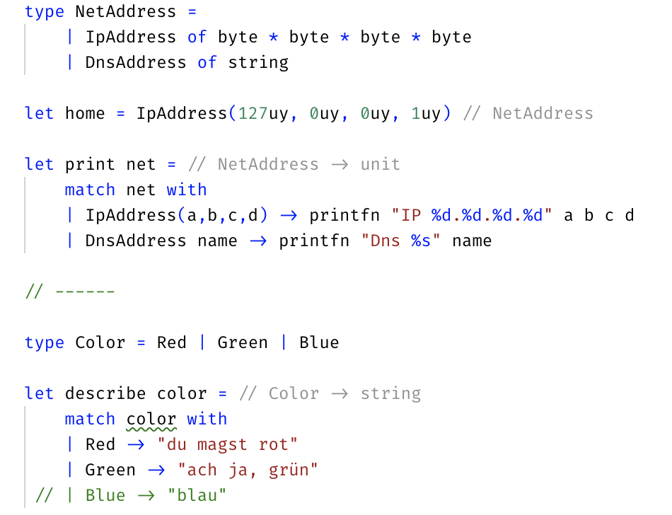

F#
Anwendungsbeispiele
Agenda
- Motivation
- Paradigmen
- F# Datentypen
- funktionale Patterns:
- Komposition
- Functor
- Monade
- Anwendungsbeispiele
— unknown
C#: neue Features
- C#7: Tupel (1,2)
- C#7: Pattern Matching (is/switch)
- C#7: Ausschuss-Variablen (_)
- C#8: kein Null
- C#8: switch expression
- evtl. C#9: Record Typ
- evtl. C#9: Union Typ
Trends
- Mainstream Sprachen: funktionale Features
- Neue Sprachen: oft funktional
Paradigma
Ein Programmierparadigma ist ein fundamentaler Programmierstil.
„Der Programmierung liegen je nach Design der einzelnen Programmiersprache verschiedene Prinzipien zugrunde. Diese sollen den Entwickler bei der Erstellung von ‚gutem Code‘ unterstützen, in manchen Fällen sogar zu einer bestimmten Herangehensweise bei der Lösung von Problemen zwingen“.
Wikipedia
Paradigmen
 https://www.info.ucl.ac.be/~pvr/paradigmsDIAGRAMeng101.pdf
https://www.info.ucl.ac.be/~pvr/paradigmsDIAGRAMeng101.pdf
Paradigmen

Paradigmen
- Strukturiert
- Ohne Goto
- Objektorientiert
- Ohne Funktions-Zeiger
- Logik
- Ohne Kontrolle
- Funktional
- Ohne Zuweisung
- Nebenläufig
- Ohne Zeit
- Reaktiv
- Ohne Return
Funktionale Programmierung
- (pure) kleine Funktionen
- Trennung von Logik und Effekten
- Komposition
- unveränderliche Daten
- diverse funktionale Patterns
Funktionale Patterns
© Scott WlashinFunktionale Patterns
- Applicative
- Verkettung
- Catamorphism
- Zusammenfassung
- Currying
- Vereinfachung
- Functor
- Konvertierung
- Monad
- Verkettung
- Monoid
- Aggregierung
- Optics
- Umgang mit Daten
- ...
F# ist...
- Open Source
- Cross Platform
- Functional-First
- Abstammung: OCaml
... kompakt

Vergleich zu C#

Datentypen in F#
- Zahlen
- byte, int, decimal
- Zeichen
- char, string
- Funktionen
- "Zeiger" auf Funktion
- Kollektionen
- List, Array, seq
- Produkt-Typen
- Tuple, Record
- Summen-Typen
- Discriminated Union
- Sonstiges
- Ausnahmen, Klassen
Operationen in F#
| C# | F# |
|---|---|
| Anweisungen | Ausdrücke |
| Zuweisung | Bindung |
| Verzweigung | Fallunterscheidung |
| Schleifen | Rekursion |
| imperativ: "wie" | deklarativ: "was" |
Discriminated Unions
Listen

Null?

Functor

Functor - Zusammenfassung
- Typ mit "Zusatz-Eigenschaft"
- map Operation
- Funktion auf Inhalt anwenden
Funktion erhält Wert
Funktion liefert neuen Wert - Struktur erhaltend
Komposition

Komposition Problem

Monade
 https://www.youtube.com/watch?v=Nq-q2USYetQ&t=60s
https://www.youtube.com/watch?v=Nq-q2USYetQ&t=60s
 https://imgflip.com/i/2v6saq
https://imgflip.com/i/2v6saq
Monade

Type Provider

- Beispiel-Daten auslesen beim Compilieren
- Datentyp daraus entwickeln
Type Provider

Pattern Matching

Pattern Matching

Producer - Consumer

Producer - Consumer

Giraffe Web API